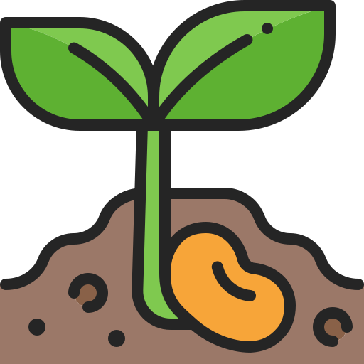
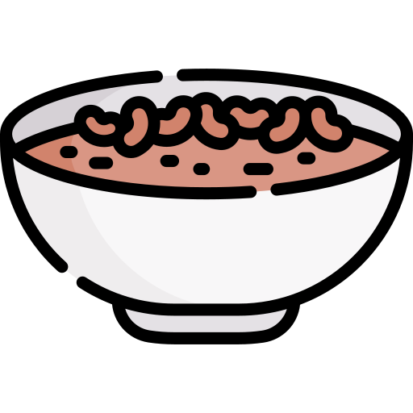

Sobre o Agrinho

O feijão é um alimento bastante popular e nutritivo em muitas culturas ao redor do mundo, especialmente na América Latina. É uma leguminosa rica em proteínas, fibras, vitaminas do complexo B, ferro e outros minerais essenciais. Existem várias variedades de feijão, como o feijão preto, feijão carioca, feijão branco, feijão vermelho, entre outros, cada um com suas próprias características de sabor e textura.
O feijão é um componente importante de muitas dietas vegetarianas e veganas, pois fornece uma fonte significativa de proteína vegetal. Além disso, é uma excelente fonte de fibras, o que ajuda na digestão e na manutenção da saúde intestinal.
Desafios
Os desafios para o cultivo do feijão incluem condições climáticas adversas, doenças e pragas, competição de plantas daninhas, esgotamento do solo, variações climáticas sazonais, acesso limitado a recursos hídricos e custos de produção elevados. Os agricultores enfrentam esses desafios através de práticas de manejo integrado, seleção de variedades resistentes e pesquisa agrícola.
Contribuição

o feijão desempenha um papel econômico crucial em muitas comunidades agrícolas, gerando renda para agricultores e sustentando a economia local. Sua versatilidade na culinária permite uma ampla gama de pratos saborosos e acessíveis, sendo uma parte fundamental da dieta de muitas culturas ao redor do mundo. Além disso, o feijão é uma cultura que pode ser cultivada de forma sustentável, contribuindo para a conservação do solo e dos recursos naturais. Sua importância cultural também é notável, pois está presente em tradições culinárias e festivais em diversas sociedades, enriquecendo a diversidade cultural e gastronômica global.
Tempo para a volta de Jesus.
Tempo restante
7
dias
7
horas
7
min
7
seg